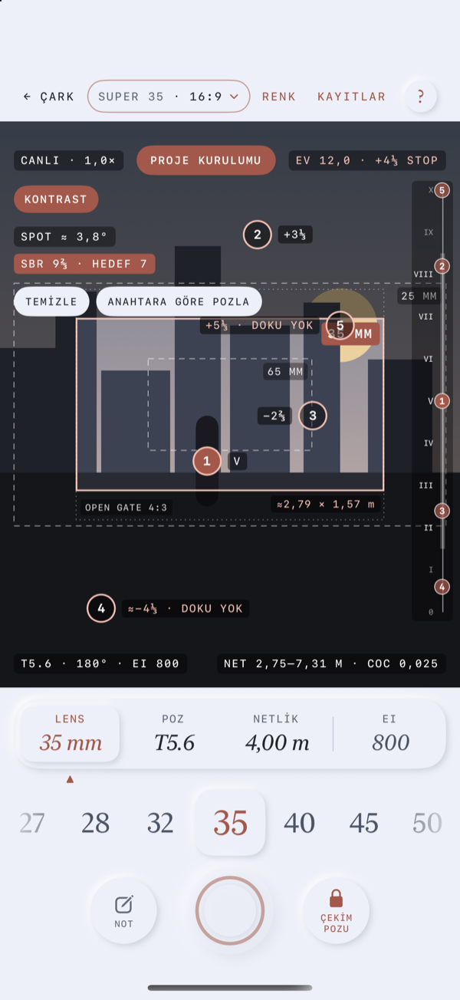
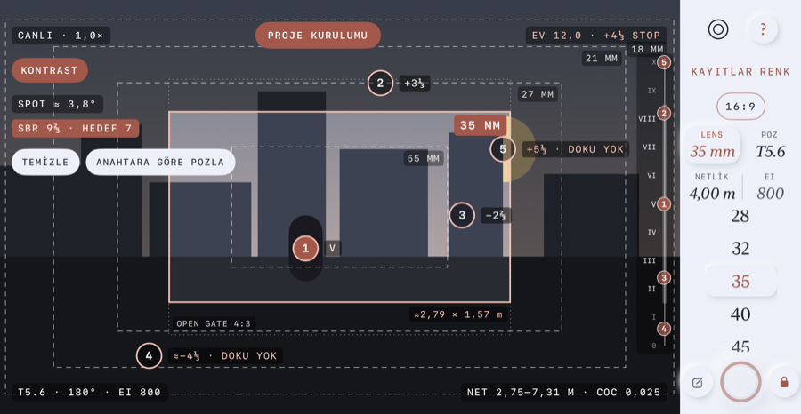
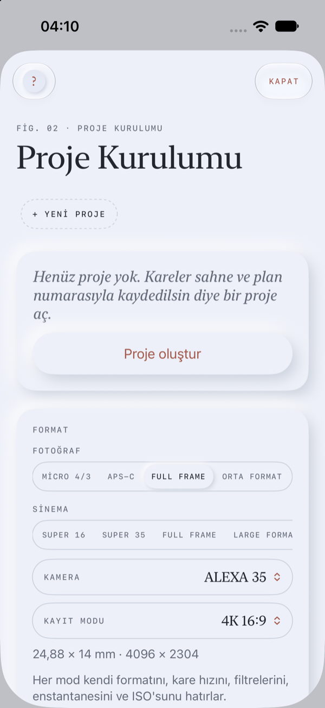
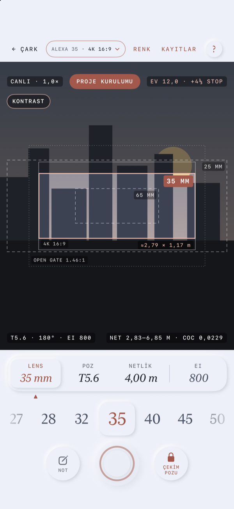
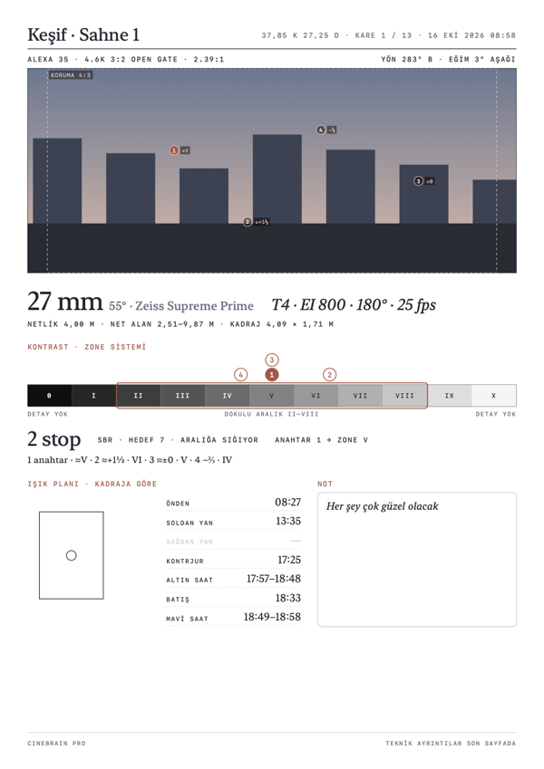
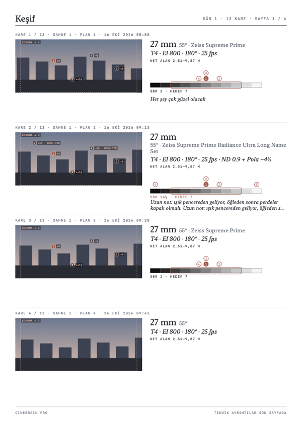
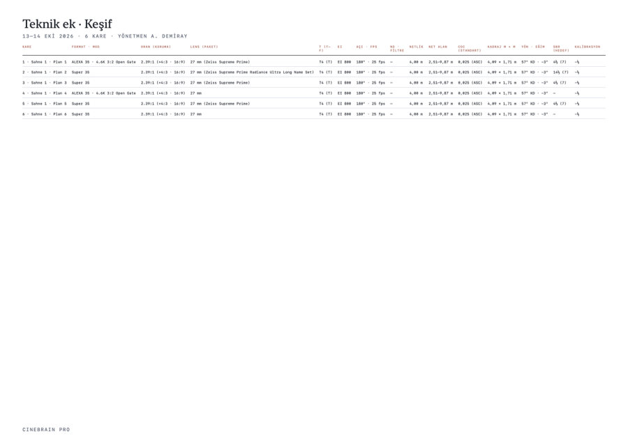

Kullanım Kılavuzu
CineBrain Pro 1.0 · PDF sürümü
1 · Başlarken
CineBrain Pro; fotoğraf ve sinema için bir poz ve alan derinliği çarkı, lensinin kadrajını iPhone kamerasıyla gösteren bir yönetmen vizörü, bir pozometre, bir jel ve filtre hesaplayıcısı ve kaydettiğin her kare için ışık planı olan bir keşif arşividir.
İlk açılış
Üç kart uygulamanın ne yaptığını, neyin ücretsiz olduğunu ve Pro’nun ne kattığını gösterir. Bir kez görünür; istediğin an Atla’ya basabilirsin. Kartları Proje Kurulumu › Tanıtım’dan yeniden izleyebilirsin.
Ücretsiz ve Pro
Uygulama ücretsiz indirilir. Poz çarkı, alan derinliği, kamera ve lens hesapları ücretsiz ve sınırsızdır. Vizör, Zone (Zone System ile spot ölçüm), ışık planı, keşif PDF’i ve kitler de tam açıktır, ama aynı anda bir projede. İkinci projeyi açmak istediğinde Pro ekranı çıkar: CineBrain Pro tek seferlik bir satın almadır (abonelik değil) ve bu sınırı kaldırır. Fiyat App Store’dan gelir. Pro ekranındaki ve Proje Kurulumu › CineBrain Pro’daki Satın alımları geri yükle, aynı Apple Hesabı’yla yeni bir iPhone’da Pro’yu geri getirir. Pro iPhone’unda doğrulanır, internetsiz de çalışır. Pro’dan önce birden fazla projen varsa hiçbiri silinmez: açabilir, aralarında geçiş yapabilir, PDF alabilirsin; yalnızca yeni proje için Pro gerekir.
İpuçları
Bir ekranı ilk açışında kısa bir ipucu bir kez görünür: çarkın halkalarını çevirmek; vizörde lens seçmek ve Open Gate ile Protection çerçevelerini okumak; Zone ile nokta ölçmek (en fazla 5; ilki anahtar, Zone V); karenin yönünün nereden geldiği (kaydetmeden önce telefonu kameranın bakacağı yöne çevir) ve arşivde PDF almak. İpucunu × ile kapatırsın. Proje Kurulumu › Tanıtım › İpuçlarını yeniden göster hepsini birer kez daha gösterir.
Her ekranda yardım
Her ana ekranın — çark, vizör, arşiv, kare detayı, Renk ve Proje Kurulumu — sağ üstündeki küçük ? ekranı karartır ve kontrollerin yanına kısa etiketler koyar. Kapatmak için herhangi bir yere dokun. Alttaki Tüm yardım, kısa bir açıklama, üç–beş adım ve bu sayfanın ilgili bölümüne giden Kılavuzun tamamı bağlantısını açar.
İzinler
- Kamera — vizör, ölçüm ve kare kaydetme.
- Konum, uygulamayı kullanırken — güneşin konumu ve ışık saatleri. İsteğe bağlı.
- Fotoğraflar, yalnızca ekleme — kareleri fotoğraf kitaplığına kaydetme.
- Mikrofon ve Konuşma Tanıma — bir notun mikrofonunu ilk kez basılı tuttuğunda sorulur; yalnızca sesli notlar için, iPhone’unda tanınır. İsteğe bağlı.
LiDAR, pusula ve hareket sensörleri izin gerektirmez. Hiçbir veri iPhone’undan çıkmaz; bkz. gizlilik politikası.
Dil ve birimler
Uygulama iPhone’unun dilini (Türkçe ya da İngilizce) kullanır; yalnızca bu uygulama için farklı bir dil seçmek istersen Ayarlar › CineBrain Pro › Dil. Mesafeler bölgene göre metre ya da feet’tir; konuya uzaklık kartından ya da Proje Kurulumu’ndan değiştirebilirsin.


2 · Poz Çarkı

Fotoğraf ya da Sinema
Başlığın yanındaki seçici çarkı değiştirir. Uygulama ilk açılışta Sinema’da, sonra en son kullandığın modda açılır; her mod kendi formatını, kare hızını, filtrelerini, enstantanesini ve ISO’sunu hatırlar. Fotoğraf: diyafram, enstantane (1 sn ile 1/4000) ve ISO. Sinema: T-stop (lensin gerçekten geçirdiği ışığa göre ölçülmüş diyafram değeri), kare hızıyla birlikte Shutter Angle (360° ile 11,25°; enstantane süresinin döner obtüratörün açık açısıyla anlatımı, 25 fps’de 180° = 1/50 sn) ve EI (exposure index: dijital sinema kamerasında ISO yerine seçilen duyarlılık değeri). Mod değişince enstantane ve duyarlılık mantıklı varsayılanlara döner (1/125 · ISO 100 ya da 180° · EI 800 ve ND 0.9; ND, neutral density: rengi değiştirmeden ışığı azaltan gri filtre, ND 0.3 bir stop) ve diyafram sahneye göre ayarlanır.
Sahne ışığı
- Ölçülen — vizör açıkken iPhone kamerasının ölçtüğü değer. Vizörü kapatınca çark son ölçümü korur.
- Elle — Güneşli (EV 15), Bulutlu (12), İç mekân (8) ya da Gece (5).
- Spot, vizörde “Bu noktaya göre pozla”yı kullandıktan sonra görünür.
Küçük kalibre edilmedi notu Kalibrasyonu açar (bkz. Proje Kurulumu). Kartın altında, ayarların doğru pozdan ne kadar uzak olduğu üçte bir stop hassasiyetle yazar: +⅓ fazla, −1 az ya da doğru; vizör de EV’nin yanında aynısını gösterir. İlk ölçüm gelene kadar “—” görünür.
Halkalar
Halkaları parmağınla döndür: dış — diyafram ya da T-stop (1.4 ile 22); orta — enstantane ya da Shutter Angle; iç — ISO ya da EI (100 ile 12800). Diyafram, ISO/EI ve Fotoğraf enstantanesi (1″, 0.8″, 0.6″, 1/2 … 1/4000) üçte bir stop adımlarla ilerler: tam stoplar halkada rakamla, ⅓’ler küçük çentikle gösterilir (seçili çentik bakır); seçili değerin tam etiketi (örn. T3.2, 1280 EI) çarkın üstünde yazar. ⅓ adımda hafif, tam stopta belirgin bir tık hissedilir; bir tam stop için eskisi kadar çevirirsin. Shutter Angle listesi (360° ile 11,25°) değişmedi. Sinema’da bir ARRI kamerası seçiliyse (bkz. Kamera ve kayıt modu) EI halkası ARRI’nin listesini kullanır: 160, 200, 250, 320, 400, 500, 640, 800, 1000, 1280, 1600, 2000, 2560, 3200, 4800, 6400; Sony, RED ve genel formatlarda üçte bir adımla 100 ile 12800. Etiketler alışılmış yuvarlak değerlerdir; hesap tam değerle yapılır (T2.8 = 2,83, T22 = 22,63; EI 1280, 1250 ile aynı sayılır), bu yüzden tam stoplarda alan derinliği önceki sürümlerden en fazla %3 farklı olabilir. Vizörü açmak için ortadaki irise dokun ya da telefonu yan çevir. Sağ üstteki EV, filtreler dahil mevcut ayarların EV’sidir.
Çarkın altında
- Filtreler satırı (filtre takılıysa) ve konuya uzaklık kartı — bkz. Netlik.
- Büyük yazıyla diyafram, enstantane ve ISO; ardından alan derinliği kartı: yakın ve uzak sınırlar, hiperfokal mesafe, sensör ölçüsü, kırpma oranı, CoC (circle of confusion: netlik noktasından sapan bir noktanın sensörde oluşturduğu bulanık lekenin, hâlâ net sayılan en büyük çapı), lensin o anki netlik mesafesindeki yaklaşık yatay görüş açısı ve kadrajın netlik mesafesindeki yaklaşık genişlik × yüksekliği (örn. “Kadraj 3,00 m'de ≈1,44 × 0,60 m”). Vizör aynı boyutu aktif çerçevenin etiketinin altında, CoC’yi de alan derinliğinin yanında gösterir (“NET 2,77–3,27 m · CoC 0,025”).
- Renk sıcaklığı kartı Renk ekranını açar.
- Format — Fotoğraf: Micro 4/3, APS-C, Full frame, Orta format. Sinema: Super 16, Super 35, Full Frame (35,9 × 24 mm), Large format, 65 mm. Kare hızı (Sinema): 24 ile 120.
- Filtreler — + Filtre ekle ile: ND 0.3–2.1, polarize (≈1⅔ stop), 85 ve 85B (⅔), 80A (2), 81A (⅓), difüzyon ⅛–1 (ışık kaybı yok) ya da stop olarak girilen özel bir kayıp. Çıkarmak için filtreye dokun. Toplam kayıp poza girer.
- Lens — 8 ile 600 mm.
- Diyaframı sahneye göre pozla, doğru poza en yakın diyaframı ya da T-stop’u üçte bir stop hassasiyetle seçer.
3 · Netlik ve alan derinliği
Netlik halkası
Konuya uzaklık kartı bir lens netlik skalası gibi çalışır: cetveli bakır işaretin altında sağa sola kaydır. Skala logaritmiktir — yakın mesafeler geniş, uzaklar sık. Yavaş kaydırınca ince, hızlı kaydırınca kaba ilerler. Her adımda hafif bir titreşim, tam metre ya da feet’te belirgin bir tık olur. Cetveli kaydırmak sayfayı kaydırmaz.
- Adımlar (metre)
- 2 m’ye kadar 1 cm · 2–5 m arası 5 cm · 5–10 m arası 10 cm · 10–30 m arası 50 cm · sonra ∞.
- Adımlar (feet)
- 6′6″’e kadar 1″ · 16′6″’e kadar 2″ · 33′’e kadar 4″ · 100′’e kadar 1′6″ · sonra ∞.
− / + bulunduğun aralığın bir adımı kadar ilerler; basılı tutunca tekrarlar ve tuttukça hızlanır. Tam bir mesafe yazmak için büyük değere dokun (örneğin 2,37 m, ya da feet ve inç) ya da ∞’u seç. m / ft anahtarı birimi değiştirir.
Vizörde
Aynı mesafe vizörde Netlik değerinde de görünür (değer şeridinde ona dokun) ve iPhone kamerası yaklaşık o mesafeye netler. LiDAR’lı iPhone’larda Mesafe ölç — netlik halkasının sonundaki nişangâh simgeli yuvarlak düğme — kadrajın ortasındaki noktayı (yaklaşık 5 m’ye kadar) ölçüp yazar. İki arka kameralı iPhone’larda bunun yerine Mesafe tahmin et çıkar; iki kameranın derinlik verisinden hesaplanır. Tek arka kameralı iPhone’larda düğme yoktur; mesafeyi elle gir. Kısacası: LiDAR’lı modellerde LiDAR; çift kameralı modellerde derinlikten yaklaşık tahmin; diğer modellerde elle giriş. Tahminler burada, vizörde ve kayıt detayında ≈ ile gösterilir. Her durumda telefon ile sensör düzlemi arasındaki fark için Proje Kurulumu’ndaki Mesafe ölçüm ofseti eklenir.
Alan derinliği
Alan derinliği, seçili formatın CoC ile hesaplanır ve 10 m altında santimetre hassasiyetle (örneğin 2,31–2,48 m) ya da feet-inç olarak gösterilir.
CoC bir varsayımdır, tek doğru değeri yoktur; seçtiğin standart sonucu değiştirir. CineBrain hiperfokali ve alan derinliğini sensör üzerindeki CoC ile hesaplar; baskı/perde büyütmesini hesaba katmaz.
Halkadaki alan derinliği işaretleri
Lens gövdesindeki alan derinliği skalası gibi, netlik halkası işaretin iki yanında iki kısa bakır çizgi gösterir: o anki lens, diyafram ya da T-stop, format ve mesafeye göre alan derinliğinin yakın ve uzak sınırı. Arası hafifçe doludur; sınırlar çizgilerin yanında küçük mono yazıyla yazar (10 m altında santimetre, ya da feet-inç). Uzak sınır sonsuza ulaşınca — hiperfokal mesafede ya da ötesinde netlediysen — uzak çizgi yerine bant okla ∞ ucuna uzanır. Bir sınır halkanın görünen kısmının dışındaysa değeri kenarda okla bekler. İşaretler logaritmik skalaya göre konumlanır ve lens, diyafram, format ya da mesafe değişince hemen güncellenir; vizörde Poz’da seçili diyaframı kullanır.

4 · Vizör

Ne görürsün
iPhone kamerası, aktif lensin seçili en-boy oranındaki çerçevesi (bakır) ve Protection çizgileri (shoot & protect: kadrajın yanında başka bir yayın biçimi için korunacak alanı gösteren ek çerçeve) görüntüyü dolduracak kadar yakınlaşır — yatayda neredeyse kenardan kenara, dikeyde tam genişlik. iPhone ultra geniş, geniş ve tele kameraları arasında kendisi geçer. Çerçevenin dışı koyulaşır; komşu lensler odak uzaklıklarıyla kesik çizgili çerçeve olarak çizilir. Noktalı çizgi formatın tamamını gösterir — formatın kayıtlı genişlik × yüksekliğinden Open Gate (sensörün kayıt yapabildiği alanın tamamı; örn. Full Frame 35,9 × 24 mm için Open Gate 3:2); seçilen en-boy oranı bunun içine ortalanır, hiçbir zaman dışına taşmaz. Aktif çerçevenin etiketinin altındaki ≈2,80 × 1,17 m, seçilen en-boy oranındaki kadrajın netlik mesafesindeki boyutudur; başka bir etiketin üstüne binecekse çerçevenin altına ya da içine geçer. Lensin telefonun gösterebileceğinden genişse ◂ Daha geniş ▸ çıkar.
Ekranın üstü
- ← Çark, format etiketi, Renk, Kayıtlar ve ?. Format etiketi sensör formatını, en-boy oranını, Anamorphic Squeeze’i (Anamorphic: görüntüyü yatayda sıkıştırarak kaydeden, açılınca geniş en-boy oranı veren lens türü; Squeeze: bu yatay sıkıştırma katsayısı, ör. 2×) ve kaç Protection oranının açık olduğunu gösterir (örn. Super 35 · 2.39 · 2× · +2). Bakır çerçeveli, küçük oklu bir kapsülün içindedir; değiştirmek için dokun.
- Canlı · 1,4× — telefonun zoom’u (1× = ana kamera).
- Bakır sahne · plan düğmesi (proje yoksa Proje Kurulumu) — Proje Kurulumu’nu açar.
- EV · stop — sahne ışığı ve ayarların doğru pozdan farkı.
Ekranın altı
- Değer şeridi — Lens · Poz · Netlik ve ince bir ayraçtan sonra EI (ya da ISO; yalnızca gösterge). Değiştirmek için değere dokun: seçili olan kabarık ve bakır olur, altında küçük bakır bir ok çıkar; alttaki seçici ona geçer.
- Lens — seçici odak uzaklıklarını (seçiliyse lens paketininkileri) listeler; seçili olan kabarık bakır kutudadır, diğerleri kenarlara doğru solar. Lensin listede yoksa sondaki Özel… 1–2000 mm arası her değeri, ondalıklı da (52,3 ya da 52.3) kabul eder; modun ayarlarıyla hatırlanır.
- Poz — önizlemek için bir diyafram ya da T-stop seç: görüntü, fazla ya da az pozu göstermek için aydınlanır ya da kararır. Kaydettiğin kare bu değeri kaydeder.
- Netlik — − / + düğmeli netlik halkası ve sonunda nişangâh simgeli yuvarlak düğme: Mesafe ölç (LiDAR) ya da Mesafe tahmin et (çift kameralı iPhone’lar; tek kameralılarda yok, bkz. Netlik).
- İşlem satırı — ortada deklanşör, solda Not, sağda kayıt pozu düğmesi (Çekim pozu için kapalı kilit, Normal poz için açık kilit); ikisi aynı boyutta ve deklanşöre aynı uzaklıkta.
Format, en-boy oranı ve Anamorphic
Vizörü bir modda ilk kez açtığında Kameran hangi formatta kayıt yapıyor? diye sorar ve o modun formatlarını sensör ölçüleriyle listeler (örn. Super 35 · 24,89 × 18,66 mm). Seninkine dokun. Her mod kendi formatını hatırladığı için Fotoğraf ve Sinema ayrı sorulur. Formatı burada, çarkta ya da Proje Kurulumu’nda bir kez seçtiğinde soru bir daha gelmez; seçmeden kaydırıp kapatırsan bir sonraki açılışta yine sorar.
Format etiketine (yatayda raydaki orana) dokununca Format ve En-boy oranı açılır:
- Format — o anki modun (Fotoğraf ya da Sinema) sensör formatı. Lens listesinde lensin üzerinde yazan mm’yi seç: uygulamanın her yerinde (vizör, çark, arşiv, PDF) lens gerçek odak uzaklığıdır, hiçbir zaman 35 mm eşdeğeri değildir; görüş açısı bundan ve formattan hesaplanır. Yakına netlendikçe kadraj biraz daralır: vizör çerçevesi, kaydedilen kare ve açı netlik mesafesine göre hesaplanır (ince lens tahmini — 50 mm’de 3 m’de yaklaşık %3, 1 m’de %10, 0,5 m’de %21 daha dar). Gerçek lenslerin netlik nefesi farklı olabilir; değer yaklaşıktır.
- En-boy oranı — 1.33 (4:3), 1.66, 1.78 (16:9), 1.85, 2.00, 2.20, 2.39, 1:1, dikey sosyal medya için 4:5 ve 9:16, ya da Özel (0.01 adımla 0.50–3.00). Kadraj, sensöre sığan o oranlı en büyük alandır: sensörden geniş bir oran üstten ve alttan, dar bir oran yanlardan kırpılır. Yatay görüş açısı ve çerçeve çizgileri buna göre değişir.
- Anamorphic Squeeze — Sferik, 1.3×, 1.5×, 1.8× ya da 2×. Anamorphic lenste yatay açı Squeeze oranı kadar genişler; çerçeve ve görüş açısı açılmış (desqueeze) görüntüye göre hesaplanır, seçili en-boy oranı da açılmış görüntünün oranıdır.
- Protection — shoot & protect için en fazla iki ek oran (örn. televizyon için 16:9, sosyal medya için 9:16). Her biri sensördeki o oranlı en büyük alandır; ince kesik çizgiyle, sol üst köşesinde küçük bir etiketle çizilir.
Burada seçilen en-boy oranı, Squeeze ve Protection çizgileri yalnızca bu oturum için geçerlidir: Proje Kurulumu kendi değerini korur (panelin üstünde yazar). Proje Kurulumu’na dön değişikliği bırakır; Proje Kurulumu’na kaydet onu yeni ayar yapar. Format, çarktaki ve Proje Kurulumu’ndaki ile aynı ayardır.
Spot ölçüm
O noktayı ölçmek için görüntünün herhangi bir yerine dokun; bir halka ve EV değeri çıkar. Bu noktaya göre pozla onu sahne ışığı yapar (kaynak Spot) ve çarkın diyaframını ona göre ayarlar. ✕ ortalama ölçüme döner.
Zone
Sahnenin en fazla beş noktasını sırayla ölçmek için Zone’a (görüntünün sol üstü) dokun. Her dokunuş o noktayı telefonun otomatik pozuyla ölçer ve oturmasını bekler: noktada küçük bir halka dolar ve Ölçülüyor… yazar. Ölçüm sürerken telefonun pozu o noktaya kaydığı için önizleme aydınlanır ya da kararır; ölçüm bitince poz eski haline döner. değer yarım saniyedeki okumaların medyanıdır. 3 saniyede oturmazsa son okuma alınır ve ≈ ile işaretlenir. iOS 26 ve sonrasında, telefon destekliyorsa küçük bir ölçüm dikdörtgeni kullanılır ve açısı Spot ≈ 4° diye gösterilir; eski sistemlerde açı okunamadığı için Spot ≈ ? yazar.
- Zone’lar ayarlı pozdan — her noktanın Zone’u ayarladığın pozdan gelir (Zone System: Ansel Adams’ın sahnedeki parlaklıkları 0, tam siyah, ile X, tam beyaz, arasında bir stopluk basamaklara yerleştiren poz yöntemi; Zone bu basamaklardan biridir, Zone V orta gri). Diyafram ya da T-stop, kare hızıyla enstantane ya da Shutter Angle, ISO ya da EI, ND ve filtreler hesaba girer: o pozun orta grisi kadar parlak nokta Zone V, bir stop parlak olan Zone VI’dır (1 stop = 1 Zone, en yakın ⅓’e). Diyaframı ya da EI’yi değiştirince bütün noktalar sağ kenardaki ince Zone cetvelinde (0–X) B&W önizlemesiyle birlikte kayar. Her noktanın etiketi, anahtar dahil, Zone’unu en yakın ⅓’e gösterir (VI⅓, IV⅔). Cetvelde Zone II–VIII, yani dokunun hâlâ seçildiği aralık belirgindir; dışına düşen nokta Doku yok der.
- Anahtar — ilk nokta anahtardır: bakır dolgulu, köşesinde küçük A. Başka bir noktaya dokunup anahtar yapabilirsin; silmek için noktaya basılı tut; Temizle hepsini siler.
- Farklar — anahtardan fark, stop cinsinden en yakın ⅓’e yuvarlanmış olarak nokta listesinde (kayıt detayı, PDF: 2 IV⅔ (−1⅔)) ve noktaya dokununca görünür; hesaplarda tam değer kullanılır.
- SBR (subject brightness range: sahnenin en parlak ve en karanlık noktası arasındaki fark, stop cinsinden) — en parlak ile en karanlık nokta arasındaki fark; ekranda görünen (⅓ stopa yuvarlanmış) değerlerden hesaplanır ki rakamlar birbirini tutsun; Proje Kurulumu’ndaki hedefle (varsayılan 7 stop) karşılaştırılır: SBR 6⅓ · Hedef 7. Hüküm üç durumludur: hedefi aşıyorsa hedefi x stop aşıyor (bakır); hedefe sığıyor ama Zone II–VIII (Zone değeri 1,5–8,5) dışında nokta varsa SBR sığıyor · n nokta dokulu aralık dışında ve ayarlı poza göre bir öneri — bütün noktaları içeri alan en küçük ⅓ stopluk kaydırma, örn. Pozu ⅓ stop aç: tüm noktalar II–VIII içine girer (ya da kıs); yoksa aralığa sığıyor. Diyafram izin veriyorsa önerinin yanındaki Uygula diyaframı ya da T-stop’u o kadar değiştirir (vizörde ve çarkta); hüküm ardından aralığa sığıyor olur. Aynı hüküm PDF’te de yazar.
- Görüntünün altındaki şerit — Zone açıkken SBR, hüküm ve öneri ile düğmeler (Temizle, Anahtarı Zone V’e pozla, Uygula) görüntünün altında, kadrajın dışındaki bir şeritte durur. Kadraj, Protection ve ölçü etiketleri gizlenir (çizgiler kalır); nokta etiketleri birbirinin üstüne binmesin diye yana kayar.
- Anahtarı Zone V’e pozla — yanındaki küçük seçici (V ▾) anahtarın Zone’unu seçer, II–VIII (varsayılan V); düğme onu yazar (Anahtarı Zone VII’ye pozla); seçim projeyle saklanır. Sahne ışığını, anahtar o Zone’a düşecek şekilde ayarlar: sahne EV’si = anahtar EV’si − (anahtar Zone’u − 5); ardından en yakın ⅓ stopluk diyaframı seçer, böylece anahtar Zone’undan en fazla ⅙ stop sapar ve pozometre doğru der. Zone VI’ya konan ten bir stop fazla poz alır.
Zone kapanınca kamera önceki ölçümüne döner. Zone açıkken kaydedilen kare noktaları, anahtarı ve Zone’unu, SBR’yi, hedefi, kalibrasyonu ve spot açısını saklar; kayıt detayı, PDF ve Fotoğraflar’daki kopya numaralı noktaları, Zone özetini ve SBR’yi gösterir. Zone’ları karenin kendi kayıtlı pozuna göre hesaplanır.
Telefon pozometresi yaklaşık ⅓ stop hassasiyetindedir; farklar kalibrasyondan etkilenmez, mutlak değerler için Kalibrasyonu referans pozometreye göre ayarlayın. Spot ölçüm telefonun otomatik pozuna dayandığı için çok yüksek kontrastlı sahnede aralık sıkışır: güneşte beyaz bir örtü ile koyu gölge arasında SBR yalnızca 3⅓ stop görünebilir. Böyle sahneleri bir spot pozometreyle kontrol et.
B&W önizlemesi: Yumuşak ve Basamaklı
Zone’un yanındaki B&W, görüntüyü ayarladığın pozun baskıda vereceği gibi siyah-beyaz gösterir: pozun orta grisi (%18 gri) Zone V, bir stop bir Zone’dur; altta derin siyaha, üstte beyaza iner ve çıkar. Açıkken düğme B&W | YUMUŞAK | BASAMAKLI olur: Yumuşak basamaksız, baskı gibi bir eğridir; Basamaklı’da görüntünün her yeri en yakın tam Zone’un grisini alır (0 siyah, V orta gri, X beyaz; patlamış parlak yerler Zone X). Önizlemeyi kapatmak için bakır B&W’ye dokun. Her açılışta Yumuşak ile başlar. (Zone yalnızca nokta ölçümü düğmesidir.) Diyaframı, enstantaneyi, EI’yi ya da filtreleri değiştirince tonlar kayar; telefon kendi pozunu değiştirince (aydınlık ya da karanlık bir yere çevirince) bir yüzeyin Zone’u yerinde kalır. PDF’teki Zone şeridi aynı grileri kullanır.
Önizleme yaklaşıktır: canlı görüntü telefonun işlediği görüntüden gelir, Zone’lar yaklaşıktır — kesin ölçüm için Zone noktalarını (spot ölçüm) kullan. Aynı not ? etiketlerinde de var. Önizleme açıkken telefon destekliyorsa tek bir ton eğrisi kullanır; desteklemiyorsa düğmede ≈ görünür. Önizleme açıkken kaydedilen kareler renkli kaydedilir, ama telefonun çok kareli işlemesi olmadan; bu yüzden biraz daha gürültülü ya da düz görünebilir.
Güneş işareti
Konum ve pusulayla, bakır bir disk güneşin görüntüdeki yerini gösterir; görüntü dışındaysa kenarda bir ok ona yönelir (üstteki ve alttaki bilgi satırlarına binmez). Güneş çerçevenin içindeyse Kontrjur yazar. İşaret kayıksa gerçek güneşi yatayda ortala ve yanındaki Hizala’ya bas; ince ayar Proje Kurulumu › Pusula düzeltmesi’nde.
Kare kaydetme
Bakır halkalı deklanşöre bas. Ekran bir an parlar ve “Kaydedildi · Sahne 12 · Plan 3” yazar. Kare aktif lensin seçili en-boy oranındaki çerçevesine kırpılır ve arşive lens, format, en-boy oranı, Anamorphic Squeeze, Protection oranları, poz, filtreler, netlik mesafesi, alan derinliği, tarih, proje, gün, sahne ve planla — varsa konum ve pusula yönüyle — kaydedilir. Ayrıca Fotoğraflar’a eklenir; açtıysan altına bilgi şeridi basılır. “Her karede planı bir artır” açıksa plan numarası bir artar. Deklanşörün solundaki Not düğmesi (telefon yataydayken sağ rayda) her zaman oradadır: son kaydedilen karenin notunu açar; yazabilir ya da söyleyebilirsin (bkz. Sesli not).
Deklanşörün sağındaki yuvarlak düğme (yatayda rayda) kaydedilen karenin pozunu belirler: Çekim pozu (kapalı kilit, varsayılan) vizörde gördüğün simüle edilmiş pozu korur, yani az pozlu bir ayar karanlık kaydedilir; Normal poz (açık kilit) kaydetmeden önce telefonun bir anlığına doğru poz vermesine izin verir — kadrajı ve mekânı kaydetmek için iyidir. Hangisiyle çekildiği kayıt detayında yazar (Kayıt pozu).
Protection oranları kaydedilen karenin üzerine ince kesik çizgi ve küçük etiketle çizilir — kayıt detayında, PDF’te ve Fotoğraflar’daki kopyada. Kareden büyük bir Protection alanının yalnızca kareye düşen çizgileri görünür (ör. 2.39 karede 9:16’nın yanları). Proje Kurulumu › Dışa aktarma’dan kapatılabilir.
Telefonu yan çevirince yatay düzen gelir: düğmeler aynı düzenle sağdaki bir raya geçer — değerler 2 × 2 ızgarada (Lens · Poz / Netlik · EI), seçici ve en altta Not · deklanşör · kayıt pozu (yalnızca simge) — ve Netlik’te aynı alan derinliği işaretleriyle dikey bir netlik halkası (∞ yukarıda) ve − / + düğmeleri bulunur.


5 · Renk

Renk ekranını çarktaki renk sıcaklığı kartından ya da vizörden aç.
Işık ölçümü
- Ölçülen — iPhone kamerasının otomatik beyaz dengesi; vizör çalışırken canlı okunur.
- Spot — vizör “Beyaz ya da gri bir yüzeye dokun” ipucuyla açılır; o noktanın rengi ölçülüp buraya gönderilir.
- Elle — Mum 1900 K, Tungsten 3200 K, HMI / Gün ışığı 5600 K, Bulutlu 6500 K, Gölge 7500 K ya da kaydırıcı (1500–12000 K). Bir değeri elle değiştirmek kaynağı Elle yapar.
Tint kaydırıcısı (−50 ile +50) elle ayarlanabilir. Ölçüm yaklaşıktır — telefon bir renk ölçer değildir.
Kamera ve Mired farkı
Kameranın beyaz dengesini ayarla (3200, 4300, 5600, 6500 K ya da kaydırıcı). Mired farkı (Mired: renk sıcaklığı farkını jel ve filtre için doğrusal ölçen birim, 1.000.000 / Kelvin) kamera eksi ışıktır: artı, ışığın fazla mavi olduğunu (CTO ile ısıt), eksi fazla sıcak olduğunu (CTB ile soğut) gösterir.
Öneriler
- Işığa jel — Rosco ya da LEE; tek jel ya da ikili; ürün numaraları, kayma, kalan fark ve sonuçtaki renk sıcaklığı.
- Ya da objektife filtre — 85, 85B, 85C, 81A–C, 80A–C, 82A ve filtre faktörleri. Objektife tak, 85, 85B, 80A ya da 81A’yı çarkın filtrelerine ekler.
- Yeşil · magenta — tint’e göre tam, ½ ya da ¼ Plus ya da Minus Green (Rosco 3304/3315/3316 ve 3308/3313/3314; LEE 244–246 ve 247–249). Tint yaklaşık CC birimindedir.
Rosco değerleri yayımlandığı gibidir. LEE dönüşümleri yayımlar; buradaki Mired kaymaları bunlardan hesaplanmıştır. Kamera filtreleri Wratten değerleridir.
6 · Keşif: kareler, künye, arşiv, PDF


Proje Kurulumu
Poz Çarkı’nın üstündeki Proje Kurulumu’ndan, vizördeki bakır sahne · plan düğmesinden ya da Kayıtlar › Proje Kurulumu’ndan aç. Burada ayarlanan her şey sen burada değiştirene kadar olduğu gibi kalır — mod değiştirmek ya da vizörde bir şey denemek onu sıfırlamaz.
- Projeler — aktif yapmak için bir projeye dokun; + Yeni proje yenisini açar. Yeni kareler aktif projeye kaydedilir.
- Bugünkü çekim — − / + ile gün, sahne ve plan sayaçları; Her karede planı bir artır.
- Künye bilgileri — proje adı, yönetmen, görüntü yönetmeni, yapım ve çekim tarihleri; arşivde ve PDF kapağında görünür.
- Projeyi sil — kareleri arşivde kalır.
Ayarlar (Proje Kurulumu’nda)
- Format — Fotoğraf ve Sinema için sensör formatı; her mod kendininkini tutar.
- Kamera ve kayıt modu (yalnızca Sinema) — isteğe bağlı, Sinema formatlarının altında. Kamera Yok — genel format ile başlar; o zaman yukarıdaki formatlar geçerlidir. Bir kamera seç — menü markaya göre bölümlüdür: ARRI (ALEXA 35 ve 35 Xtreme, ALEXA Mini LF, ALEXA LF, ALEXA 65, ALEXA 265, ALEXA Mini, AMIRA, ALEXA SXT W), Sony (VENICE, 6K ya da 8.6K sensörlü VENICE 2, BURANO) ve RED (V-RAPTOR 8K VV, V-RAPTOR [X] 8K VV, V-RAPTOR 8K S35, KOMODO 6K, KOMODO-X 6K); RED’in uzun mod listeleri RED’in menü gruplarına ya da çözünürlüğe göre bölümlere ayrılır. Sony FX9, FX6 ve FX3 listede yok, çünkü Sony kayıt alanı ölçülerini yayınlamıyor. Ardından Kayıt modu seç: kadraj, en-boy oranının yerleşimi, görüş açısı, netlik mesafesindeki kadraj boyutu, vizör çerçeveleri ve CoC (kayıt alanının köşegeninden) o modun milimetre cinsinden kayıt alanıyla hesaplanır; örneğin ALEXA 35 · 3.8K 2.39:1 = 23,325 × 9,77 mm. Vizördeki format yazısı ALEXA 35 · 3.8K 2.39:1 olur. Kayıt alanı kameranın Open Gate’inden küçükse vizör ikisini de çizer: Open Gate noktalı, kayıt alanı mod adıyla ince düz çizgi. Anamorphic modlarda (ARRI Ana 2x, Sony Anamorphic, RED 1.25×–2× modları) Squeeze moddan gelir ve değiştirilemez; diğer modlarda senin Squeeze ayarın kalır. Küçük ⓘ, üretici belgelerinden hesaplanan ya da tek kaynakla doğrulanan değerleri işaretler. Çarkta ya da burada genel bir format seçmek kamerayı Yok’a döndürür. Projeyle saklanır; eski projeler Yok ile açılır.
- Kitler — Kitlerim bir kamerayı ve kayıt modunu, en-boy oranını, en fazla iki Protection oranını ve bir lens paketini bir adla saklar: ekle, düzenle, çoğalt ya da sil; yıldız bir kiti varsayılan yapar (en fazla bir; silinirse varsayılan boş kalır). Proje Kurulumu’nun en üstündeki Kit seçici (bir kit olunca görünür) bu ayarları doldurur; her birini yine tek tek değiştirebilirsin, kitin kendisi değişmez. Ayarlar kitten farklıysa Kite kaydet ve Yeni kit olarak kaydet çıkar. Yeni proje varsayılan kitle açılır. Kitteki kamera ya da mod artık listede yoksa bir not bunu söyler ve o alan boş kalır. Hiç kit yoksa her şey eskisi gibi çalışır.
- Kadraj — vizör ve kaydedilen kareler için en-boy oranı, Anamorphic Squeeze ve Protection çizgileri. Aktif bir proje varsa projeyle de kaydedilir; o proje yeniden seçilince geri gelir.
- Lens paketi — kendi lens setlerin: Yeni lens paketi’ne dokun, bir ad ver ve ızgarada lenslerinin üzerinde yazan odak uzaklıklarına dokun (kaldırmak için tekrar dokun; seçili lens sayısı ızgaranın üstünde yazar). Izgarada olmayan bir değer için + Özel mm’ye dokunup değeri gir; virgül ya da nokta olabilir (52,3 ya da 52.3), 1–2000 mm. Değer ızgaraya eklenir ve aynı şekilde kaldırılır. Kaydetmek için ad ve en az bir lens gerekir. Her modun (Sinema, Fotoğraf) kendi seçimi vardır; ilk seçenek Tümü eskisi gibi bütün lensleri gösterir. Paket seçiliyken çarkta ve vizörde yalnızca onun lensleri listelenir; başka bir değer için Özel… her zaman kullanılabilir. Seçili lens yeni pakette yoksa en yakın odak uzaklığı seçilir; elle girdiğin özel değer korunur. Seçim hatırlanır ve projeyle saklanır. Düzenlemek (lensleri seçili gelir) ya da silmek için pakete dokun.
- CoC — alan derinliğinin hesaplandığı bulanıklık ölçüsü. Tek bir standart yok: ASC (varsayılan) Super 35 için 0,025 mm, Super 16 için 0,015 mm; Cooke Super 35 için 0,025 mm, Super 16 için 0,0125 mm kullanır; diğer sinema formatlarında (Full Frame, large format, 65 mm) ikisinde de 0,025 mm × format köşegeni / 31,11 mm (Super 35 köşegeni) alınır; Zeiss d/1500 format köşegeni / 1500'dür; Özel 0,005–0,1 mm kabul eder. Fotoğraf formatlarının kendi seçimi var ve Super 35 ölçeklemesi orada kullanılmaz: Zeiss d/1500 (varsayılan: format köşegeni / 1500, full frame'de yaklaşık 0,029 mm; H. H. Nasse, “Depth of Field and Bokeh”, Carl Zeiss), Canon (full frame 0,035 mm, APS-C 0,019 mm; Canon Europe Pro, “Depth of field”; yalnızca bu iki formatta görünür) ya da Özel; ASC ve Cooke sinema standartları olduğu için orada yer almaz. Karşılaştırma için 1982 Guild Kelly hesap çarkı 35 mm'de 0,0359 mm kullanıyordu. Kullanılan değer standardıyla gösterilir (“CoC 0,025 mm · ASC”, “CoC 0,0288 mm · Zeiss”). Projeyle saklanır.
- T–f farkı — 0, ⅒ ya da ⅓ stop (varsayılan 0). Sinema lensleri T-stop ile işaretlenir ama alan derinliği biraz daha küçük olan f-sayısına bağlıdır. Poz (çark, EV, ND) her zaman T ile hesaplanır. Fark seçiliyse Sinema modunda alan derinliği ve hiperfokal mesafe f = T / 2^(fark/2) ile hesaplanır ve ≈ ile gösterilir; 0'da T ile hesaplanır ve çark gerçek alan derinliğinin biraz daha dar olabileceğini not eder.
- Mesafe birimi (m ya da ft) ve Mesafe ölçüm ofseti (±100 cm; kameranın sensörü telefonun arkasındaysa artı). LiDAR ölçümlerine ve derinlik tahminlerine eklenir.
- Kalibrasyon — üçte bir adımla ±3 stop. Aynı sahneyi el pozometresiyle ve vizörle ölç, farkı gir.
- Zone · SBR hedefi — vizördeki Zone’un en parlak ve en karanlık noktayı karşılaştırdığı sahne aralığı, üçte bir stop adımlarla (varsayılan 7); örneğin kameranın kullanılabilir dinamik aralığı.
- Pusula düzeltmesi — ±45°.
- Dışa aktarma — Fotoğraflar’a kaydedilen karelerin altına bilgi şeridi (proje, sahne/plan, format, en-boy oranı, Anamorphic ve Protection oranları, lens, poz, alan derinliği; sonunda CINEBRAIN PRO) ve Kaydedilen karelere Protection çizgilerini çiz (varsayılan açık); ayrıca keşif dosyası için Sayfa başına kare (1 ya da 2).
- CineBrain Pro — Pro’nun etkin olup olmadığı; Pro ekranını açar (satın al, satın alımları geri yükle).
- Tanıtım — tanıtımı yeniden izle, ipuçlarını yeniden göster ya da bu kılavuzu aç.


Keşif arşivi
Vizördeki Kayıtlar ile açılır. Kareler projeye (aktif olan en üstte), sonra güne ve sahneye göre gruplanır; her küçük karenin altında kare ve plan numarası yazar (KARE 7 · PLAN 3). Bilgileri için kareye dokun; silmek için basılı tut. Küçük karenin köşesindeki (ve kare detayındaki) yıldız kareyi PDF için işaretler.
Kare numarası deklanşöre bastığın anda verilir ve hiç değişmez: bir kareyi silmek diğerlerini yeniden numaralamaz, silinen numara bir daha kullanılmaz; yeni kare bir sonraki numarayı alır. Kare numarası gelmeden önce kaydedilen kareler bir kez arşiv sırasıyla numaralandı. Kare detayının başlığında numara yazar.
Kare detayı
Kaydedilen kare, her bilgi kendi kutusunda (format ve en-boy oranı ayrı), Işık planı, mekân görseli ve kendiliğinden kaydedilen bir not alanı.
Mekân görseli
PDF’te ışık saatlerinin soluna mekânın üç görselinden biri girebilir:
- Kroki — Kroki ekle: elle çizilmiş bir planın fotoğrafını çek ya da Fotoğraflar’dan seç (sistem seçicisi yalnızca seçtiğin fotoğrafı verir; fotoğraf kitaplığı izni istenmez). Krokiyi değiştir ve Krokiyi sil ile değişir.
- Harita — yalnızca Proje Kurulumu’nda Uydu haritası açıksa (varsayılan kapalı; ilk açışta kaydın konumunun Apple Haritalar’a gönderildiğini anlatan bir not çıkar): karenin konumu varsa ve iPhone internete bağlıysa kameranın çevresindeki yaklaşık 150 m’nin uydu görüntüsü (kuzey yukarı) kareyle birlikte saklanır; PDF sonra internetsiz de hazırlanır. Üzerinde: kamera (bakır nokta), lensin görüş alanı koni olarak, gün doğumundan batışa her saatin güneş yönü saatiyle, kare kaydedildiği andaki güneş yönü ve 50 m ölçeği. Bağlantı yoksa kayıt detayındaki Haritayı al getirir (yalnızca ayar açıkken görünür). Ayarı kapatınca alınmış haritalar karelerinde kalır. Apple Haritalar logosu görüntüde kalır.
- Güneş diyagramı — o günün güneş yolu yukarıdan, saat işaretleri, karenin görüş alanı ve kare saatindeki güneş.
PDF’te göster birini seçer; seçim yoksa sıra kroki, harita, güneş diyagramıdır. Dikey kroki oranını korur. Işık saatleri listesi her durumda kalır.
Sesli not
Not’un yanında bir mikrofon var. Basılı tut, konuş ve bırak: söylediklerin notun sonuna eklenir. Aynı not kartı, son kaydedilen kare için vizörde deklanşörün yanındaki Not düğmesinden de açılır. Notlar uygulamanın dilinde (Türkçe ya da İngilizce) ve yalnızca iPhone’unda tanınır: ses kaydedilmez, hiçbir şey bir yere gönderilmez. İlk seferde uygulama Mikrofon ve Konuşma Tanıma izni ister; izin verdikten sonra düğmeyi yeniden basılı tut. iPhone’un uygulamanın dilini cihaz içinde tanıyamıyorsa mikrofon görünmez, notu yazarak girersin.
PDF keşif dosyası
PDF bütün proje için, Gün PDF tek bir gün için dosya hazırlar. PDF türü’nü seç, Teknik eki ekle’yi (varsayılan açık) belirle ve PDF hazırla’ya bas; paylaş penceresi dilediğin yere gönderir. PDF’teki kareler’de Tümü, Yıldızlılar ya da Seçtiklerim’i seç (kareleri dokunarak seçersin; yıldızlılarla başlar). Seçmediğin kareler PDF’e girmez, diğerleri kare numaralarını korur: sayfada KARE 7 yazar, sayfa sırası (3 / 8) ayrıdır. Seçimlerin hatırlanır; PDF türü Proje Kurulumu › Dışa aktarma’dan da ayarlanır. PDF’ler iPhone’da, internetsiz hazırlanır; yazılar uygulamanın dilindedir.
- Keşif planı (A4 dikey, sayfada bir kare) — proje · sahne, konum koordinatları, kare numarası ve tarih; kamera · mod · oran (ya da format · oran) ve yön · eğim; numaralı Zone noktaları ve Protection etiketleriyle büyük kare; büyük yazıyla lens, yatay açı ve lens paketi adı, yanında diyafram ya da T-stop, EI, enstantane ve filtreler (uzun satır kesilmez, alta geçer); netlik, alan derinliği ve kadraj boyutu. Karenin Zone noktaları varsa ZONE SYSTEM bölümü (başlığın altında küçük “kontrast aralığı” ve Zone’ların hangi poza göre olduğu, örn. Zone’lar bu pozla: T2 · EI 800 · 180° · 25 fps · ND 0.9): 0–X Zone şeridi, dokulu aralık II–VIII çerçeveli, noktalar kendi Zone’larında (anahtar dolu), hedefe göre SBR ve anahtarın Zone’u, nokta listesi. Altta kadraja göre ışık planı — mekân görseli (kroki, harita ya da güneş diyagramı) ve yanında ışık saatleri (önden, soldan yan, sağdan yan, kontrjur, altın saat, batış, mavi saat; olmayan an soluk “—”) — ve not kutusu.
- Kare listesi (A4 dikey, sayfada dört kare) — her kare lens, paket ve açı, poz, alan derinliği, Zone noktaları varsa küçük Zone şeridi ve SBR, notun iki satırıyla.
- Teknik ek — sonda bir tablo (yatay sayfalar), her kare bir satır: kare, format · mod, oran (Protection), lens (paket), T (T–f farkı), EI, Shutter Angle · fps, ND · filtre, netlik, alan derinliği, CoC (standart), kadraj boyutu, yön · eğim, SBR (hedef) ve kalibrasyon.



7 · Işık planı

Konumla kaydedilen her karenin, o gün ve o yer için telefonda hesaplanan bir ışık planı vardır (NOAA güneş formülleri).
- Gün doğumu, batış, altın saat (güneş −4° ile 6° arası) ve mavi saat (−6° ile −4°); akşam saatleri gösterilir.
- Güneş kadranı — kuzey yukarıda, tepe noktası ortada, ufuk kenarda. Bakır kesik çizgi saatleriyle güneşin yoludur; gri dilim, lensin görüş açısı genişliğinde kadrajın yönüdür.
- Gün çizgisi — gece, mavi saat, altın saat ve gündüz. Bir saat seçmek için üzerinde parmağını kaydır.
- Kadraja göre anlar — Kayıt anı, Önden, Soldan yan, Sağdan yan, Kontrjur ve Mavi saat. Dört yönlü anda hedef güneş yönü kamera yönü + 180° (önden), − 90° (soldan yan), + 90° (sağdan yan) ve yönün kendisidir (kontrjur); güneşin ufkun üstünde olduğu her dakika taranır ve güneş azimutunun hedefe en yakın olduğu an seçilir, güneş yüksekliğiyle yazılır (örn. 15:06 · 34°). En yakın fark 45°’den büyükse “—” görünür. Bir ana dokununca kadran o saate gelir.
Seçilen saat için güneşin yönü ve yüksekliği, kadraja göre yeri, tahmini ışık seviyesi (açık gökyüzü için kaba bir EV) ve önerilen ayarlar görünür: Sinemada Shutter Angle, kare hızı ve EI korunur, ND (gerekirse T-stop) değişir; Fotoğrafta ISO ve filtreler korunur. Kontrjurda yüzler için yaklaşık bir stop açık poz önerir. Çarkı bu saate kur, o ışığı, lensi, formatı ve ayarları Poz Çarkı’na yükler (sahne ışığı Elle olur).
Yöne bağlı anlar için karenin pusula yönü gerekir.
8 · Sık sorulanlar ve sınırlar
İnternet gerekiyor mu?
Hayır. Uygulama internete bağlanmaz; yalnızca uydu haritası ayarını açarsanız (Proje Kurulumu › Uydu haritası, varsayılan kapalı) kaydın konumu harita görüntüsü için Apple’a gönderilir. Güneş hesapları ve PDF dahil geri kalan her şey iPhone’da çalışır.
Karelerim nerede?
iPhone’undaki uygulamada ve kaydetme başarılıysa Fotoğraflar’da. Cihaz yedeklerine dahildir. Uygulamayı silmek arşivini de siler.
Pozometre ne kadar doğru?
Ölçüm iPhone kamerasının kendi pozundan gelir ve bir el pozometresinden biraz farklı olabilir. Bir kez karşılaştır ve farkı Kalibrasyon’ne gir.
Renk ölçümü ne kadar doğru?
Yaklaşıktır. Kritik işler için bir renk ölçer kullan. Yeşil ışıkta (floresan) Minus yerine Plus Green öneriyorsa lütfen bize yaz.
LiDAR ve tahmini mesafe
LiDAR (Pro modeller) yaklaşık 5 m’ye kadar ölçer. LiDAR’lı modellerde LiDAR; çift kameralı modellerde derinlikten yaklaşık tahmin; diğer modellerde elle giriş. Tahminler ≈ ile gösterilir:
- Derinlik — iki arka kameralı iPhone’lar iki görüntüyü karşılaştırır. Birkaç metre içindeki dokulu bir yüzeyde en iyisidir; düz duvar, cam ve karanlık sahneler zordur.
LiDAR ve derinlik ölçümü sırasında önizleme bir an duraksar. Tahmin her seferinde aynı miktarda kayıyorsa Mesafe ölçüm ofseti ile düzelt. Kayıt detayında mesafenin nasıl bulunduğu yazar (Mesafe ölçümü); elle girilen mesafe işaretlenmez.
Pusula ve güneş işareti
iPhone pusulası genelde 5–10° içindedir ve yakındaki metallerden etkilenebilir; Hizala ya da Pusula düzeltmesi’ni kullan. Güneş işareti için konum gerekir.
Vizör çerçevesi
En-boy oranını format etiketine dokunarak seç; varsayılan 2.39:1’dir. Anamorphic lensler Squeeze oranı kadar geniş gördüğü için “Daha geniş” uyarısına daha erken ulaşır. Telefonun ultra geniş kamerasından geniş lensler “Daha geniş” gösterir; çok uzun lensler dijital zoom kullanır.
Işık planı olmayan kareler
Konumsuz (ya da uygulamanın konum izni olmadan) kaydedilen karelerin ışık planı yoktur; pusula yönü olmayan karelerde yöne bağlı anlar çıkmaz.
Fotoğraflar’daki kareler
Uygulama yalnızca fotoğraf ekleme izni ister ve kitaplığını hiç okumaz. Kaydedilen kareler bir albüme değil, kitaplığına eklenir; istersen Fotoğraflar’da kendin bir albüme koyabilirsin.